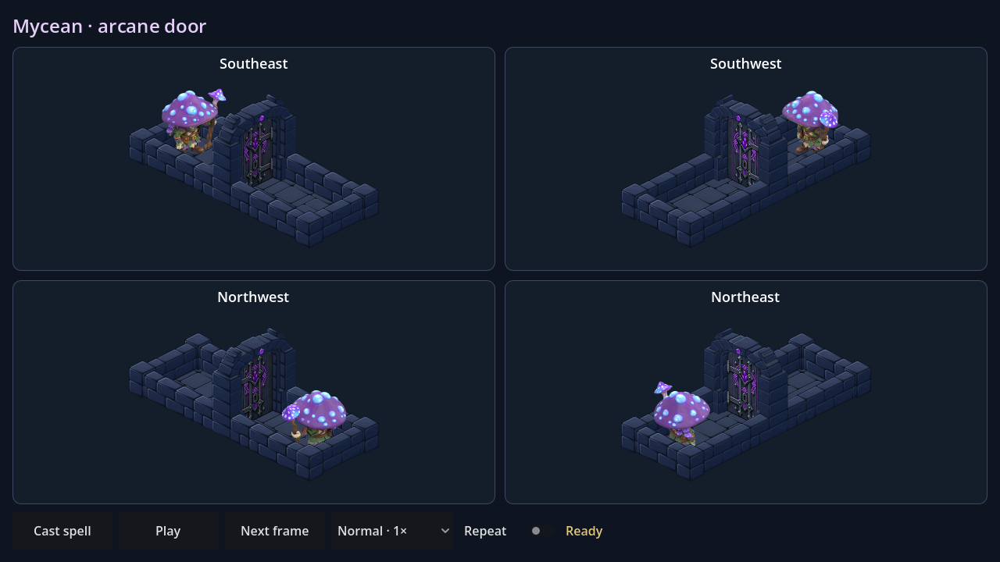
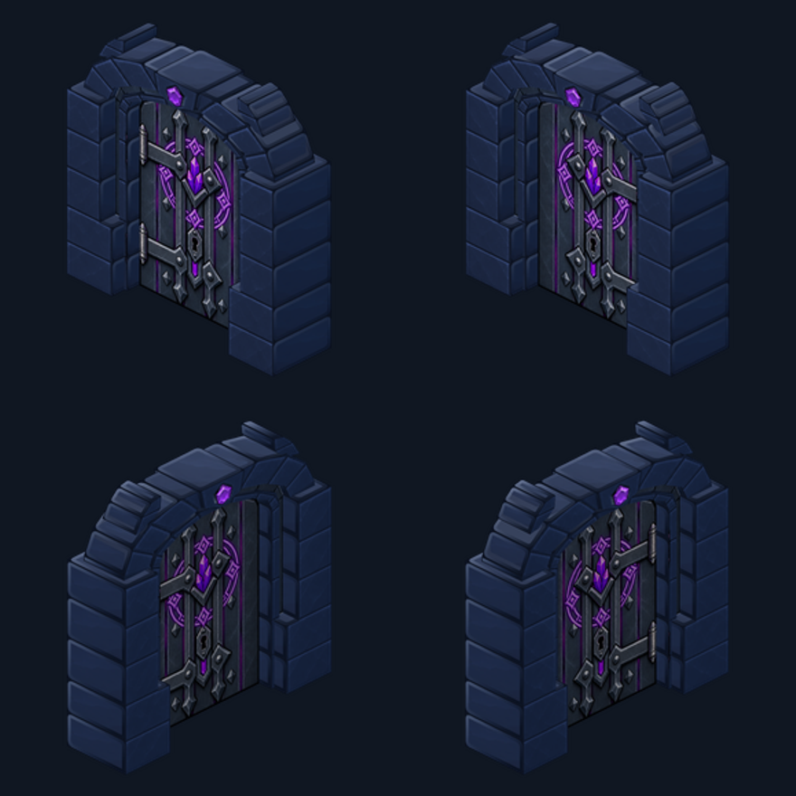
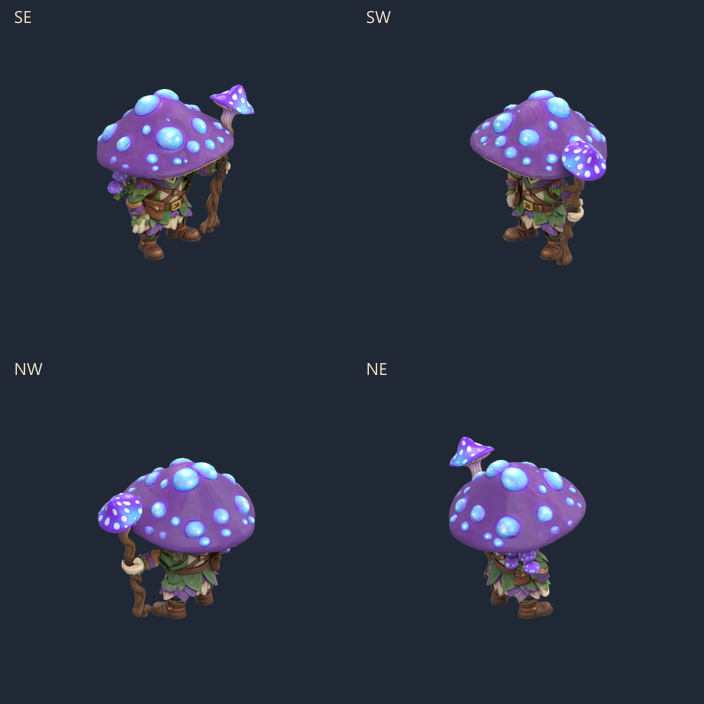

Mycean · ouverture d’un sceau magique
Le Mycean lève son bâton, canalise un rayon vers le sceau puis revient au repos. Le battant magique reprend le métal et les cristaux de la porte actuelle ; le cadre en pierre et ses raccords restent identiques.

Scène Godot : MyceanArcaneDoor.tscn (F6). Bouton Cast spell, pause, image par image, vitesses 0,5× à 2× et répétition. Le rayon est masqué par la porte lorsqu’il passe derrière sa maçonnerie.
Le battant magique

Sceau violet gravé autour du cristal, serrure mécanique conservée. À l’ouverture, seul le battant disparaît. Sources et préparation du battant.
Sprites complets

12 temps d’animation utilisent 6 poses uniques par direction : 24 images, rendues depuis le modèle 3D entier puis réduites uniformément. Aucun assemblage de membres. Incantation résolue à 1,5 s, suivie de 0,35 s de retour au repos.
Formats de test
Prévisualisation isolée : pas encore branchée aux raids, pas de sauvegarde joueur ni d’APK. Le grand chapeau du modèle masque naturellement une partie du visage. Recette reproductible et limites des vérifications.